7 資料視覺化
撰寫中 延續Ch 6，探索式資料分析可分為圖形化Graphical 或 量化Quantitative分析，總括來說作圖的目的有:
- 了解資料的特性
- 尋找資料的模式(patterns)
- 建議資料分析與建模的策略
- 結果呈現與溝通
其中前三項屬於探索圖 (Exploratory graphs)，結果呈現與溝通屬於結果圖 (Final graphs)，探索圖屬探索式資料分析，目的是在『看』與『觀察』資料的樣子，所以探索圖有以下特性:
- 很快就可以做一張圖
- 探索過程中，可能可以做圖
- 主要目的是了解資料的樣子
- 不用做圖形格式調整美化
而在製作結果圖 (Final graphs)時，則須考慮以下事項:
- 比較，呈現差異
- 比較什麼？誰跟誰比較？
- 呈現因果關係（causality）,機制（mechanism）,結果解釋（explanation）,系統化的結構（systematic structure）
- 因果模型？為什麼你想要做這樣的比較
- 呈現多變數（Multivariate）資料
- 多變數（Multivariate）：超過兩個變數就叫多變數
- 所有真實事件都是多變數的
- 將證據整合呈現
- 在同一個畫面呈現文字、數字、影像、圖表
- 盡量用圖形呈現資料
- 將圖表做適當的標記與說明，包括xy軸名稱、單位、資料來源等
- 資料圖表必須可以呈現你想說的故事
- 內容才是最重要的
- 資料不好，分析不好，圖表再美也沒有用
在R中，有三個常用的畫圖套件，包括基本功能(Base)、lattice以及ggplot2，由於各套件繪圖邏輯不同，本書只介紹最推薦的ggplot2套件的使用方式。
7.1 ggplot2套件
ggplot2 (Wickham and Chang 2016)的開發靈感來自於Dr. Leland Wilkinson的Grammar of Graphics
“In brief, the grammar tells us that a statistical graphic is a mapping from data to aesthetic attributes (colour, shape, size) of geometric objects (points, lines, bars). The plot may also contain statistical transformations of the data and is drawn on a specific coordinate system”
- from
ggplot2book
ggplot2 Package是由Hadley Wickham開發，還在持續發展更新中，對原始碼有興趣的人可以到GitHub看一下最新動態。
ggplot2 是第三個R的畫圖Package。自發表以來一直是最熱門的R packages之一，在開始學ggplot2的核心功能之前，qplot()是ggplot2 Package提供最基本的畫圖方法，跟基本的plot() function很接近，提供一個簡單入門的方法，在這篇就不詳細介紹，有興趣可以看一下網路上的教學範例。
簡單來說，做圖的文法包括兩個最主要元素：
- Aesthetic attributes：包括顏色、形狀、點的大小與線的粗細等
- Geometric objects：包括點、線、盒狀圖、直條圖等
其他元素包括：
- Facets：提供在同一張圖內做多個子圖的方法，只要使用Faceting功能設定子圖分類的依據參數即可
- Stats：將資料做統計轉換
- Scales：修改點線的顏色、形狀、xy軸的範圍等
7.1.1 qplot()
- Works much like the
plotfunction in base graphics system - Looks for data in a data frame, similar to lattice
- Plots are made up of
aesthetics(size, shape, color) andgeoms(points, lines) - Factors are important for indicating subsets of the data; they should be
labeled - The
qplot()hides what goes on underneath, which is okay for most operations ggplot()is the core function and very flexible for doing thingsqplot()cannot do
ggplot2 “Hello, world!”
library(SportsAnalytics)
NBA1516<-fetch_NBAPlayerStatistics("15-16")
library(ggplot2) #記得將ggplot2 package讀入，如果沒安奘記得先安裝
#qplot(x軸,y軸,data=使用資料)--->畫散佈圖
qplot(FieldGoalsAttempted, TotalPoints, data = NBA1516)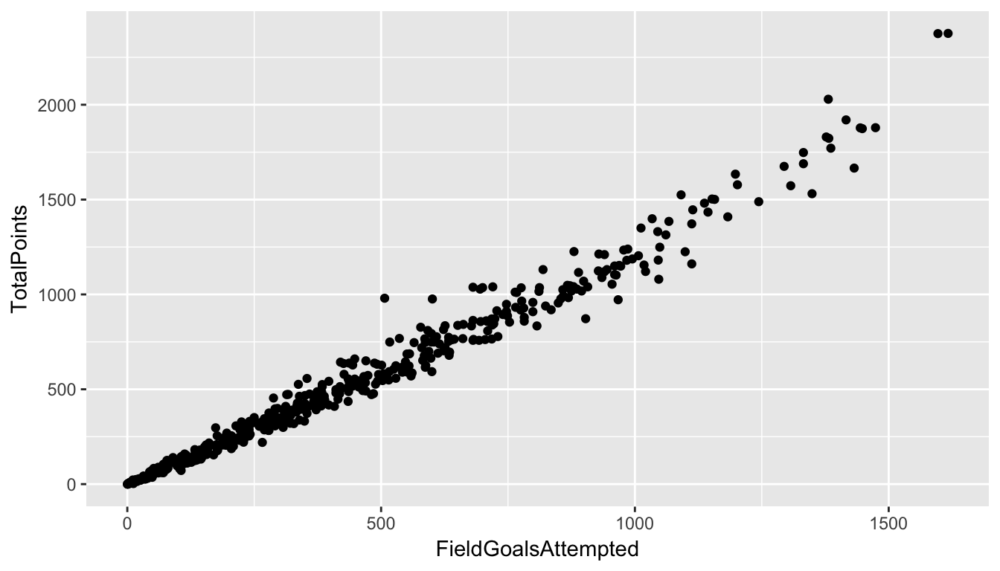
Modifying aesthetics
#color=Position, 用守備位置Position著色
qplot(FieldGoalsAttempted, TotalPoints, data = NBA1516,color=Position)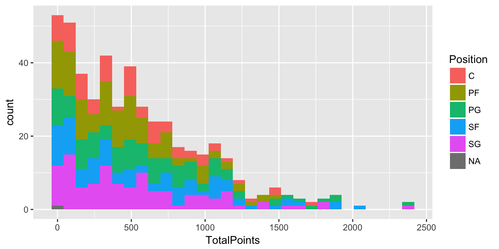
Adding a geom
#geom = c("point", "smooth") 在圖上加點與漸進線
qplot(FieldGoalsAttempted, TotalPoints, data = NBA1516,
geom = c("point", "smooth"))## `geom_smooth()` using method = 'loess'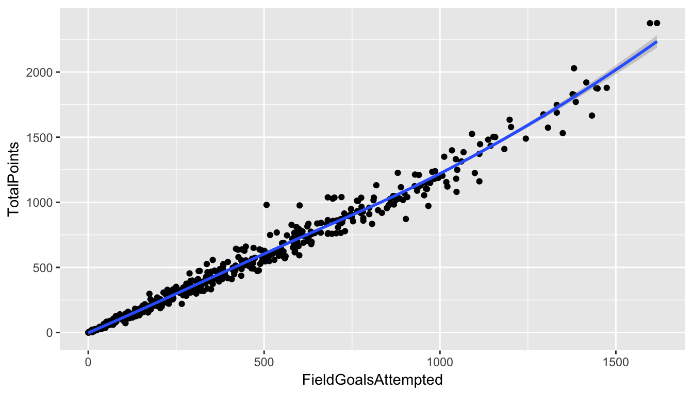
Histograms
#畫TotalPoints的直方圖/ fill = Position 並用守備位置Position著色
qplot(TotalPoints, data = NBA1516, fill = Position)## `stat_bin()` using `bins = 30`. Pick better value with `binwidth`.
Facets
#qplot(x軸,y軸,data=使用資料)--->畫散佈圖
#facets = . ~ Position 用守備位置Position分群畫圖(橫向)
qplot(FieldGoalsAttempted, TotalPoints, data = NBA1516,
facets = . ~ Position)
#facets = . ~ Position 用守備位置Position分群畫圖(直向)
qplot(FieldGoalsAttempted, TotalPoints, data = NBA1516,
facets = Position ~ .)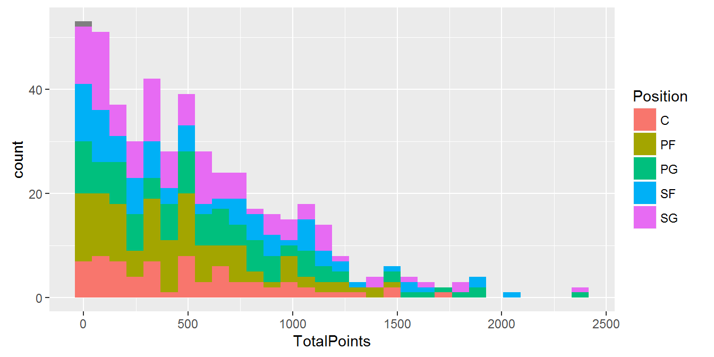
qplot(hwy, data = mpg, facets = drv ~ ., binwidth = 2)
#facets = . ~ Position 用守備位置Position分群畫圖(直向)
#binwidth = 100 每100分一組
qplot(TotalPoints, data = NBA1516,
facets = Position ~ ., binwidth = 100)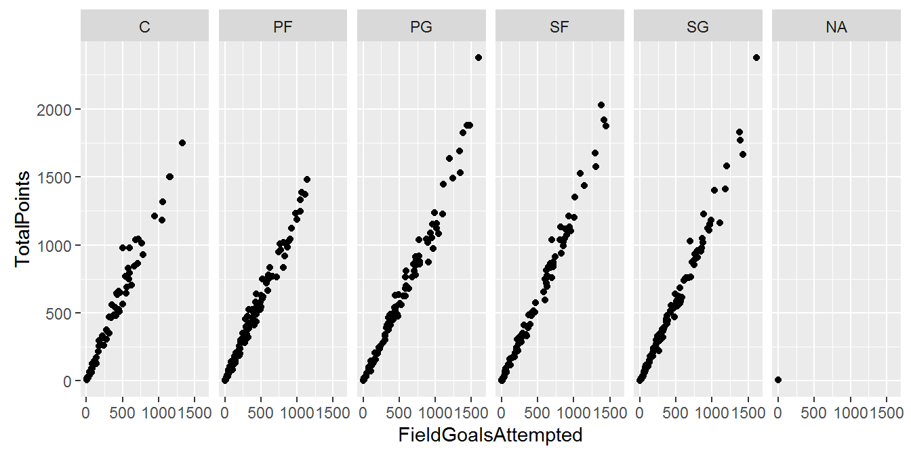
- The
qplot()function is the analog toplot()but with many built-in features - Syntax somewhere in between
base/lattice - Produces very nice graphics, essentially publication ready (if you like the design)
- Difficult to go against the grain/customize (don’t bother; use full ggplot2 power in that case)
7.1.2 ggplot()
使用ggplot2作圖有以下步驟：
- 準備好資料。當然要有資料才能畫圖
- 設定Aesthetic attributes。使用
aes(x, y, ...)指定 - 指定Geometric objects。常用的包括
geom_point()、geom_line()、geom_point()、geom_polygon()、geom_errorbar()
library(ggplot2)Generate the data
df <- data.frame(gp = factor(rep(letters[1:3], each = 10)),y = rnorm(30))Set Aesthetic attributes and assign Geometric objects
ggplot(df, aes(x = gp, y = y)) +geom_point()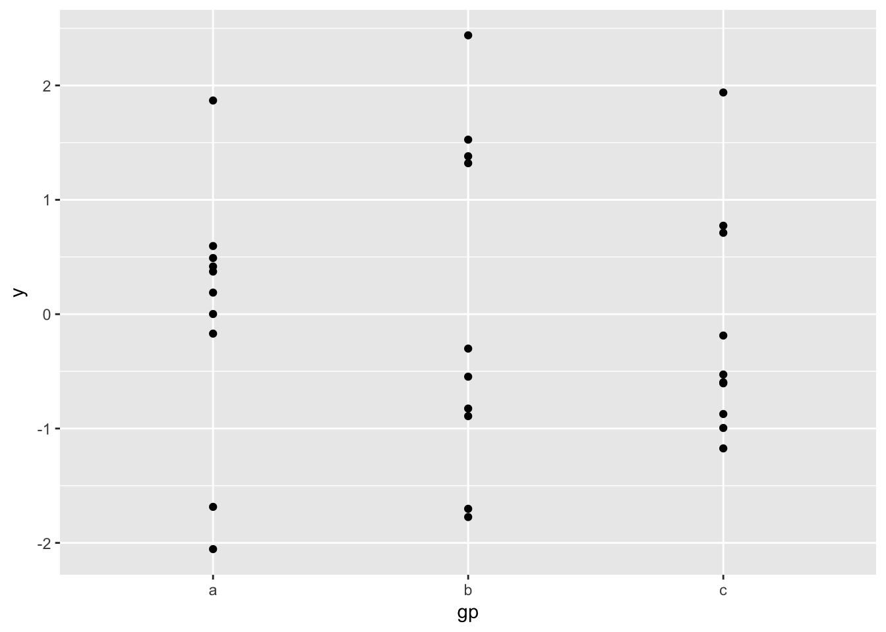 用geom_boxpolt()改畫盒狀圖
ggplot(df, aes(x = gp, y = y)) +geom_boxplot()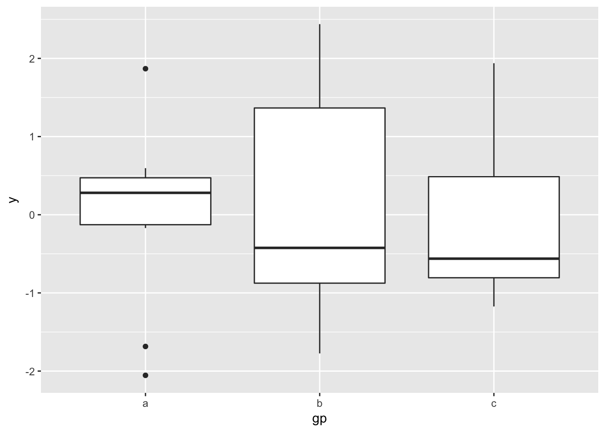 使用Faceting功能
df$z<-df$y+rnorm(30)
ggplot(df, aes(x = z, y = y)) +geom_point()+facet_grid(gp~.)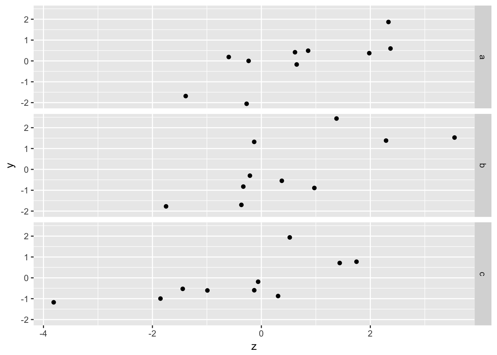 轉向
ggplot(df, aes(x = z, y = y)) +geom_point()+facet_grid(.~gp)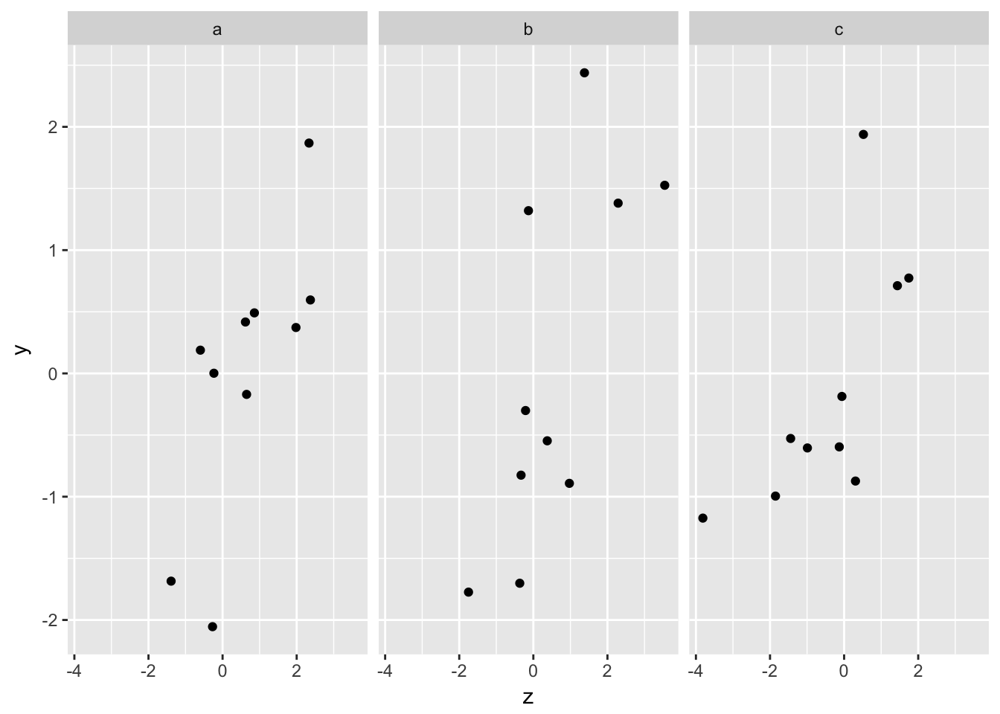 用geom_smooth()替xy散佈圖加上趨勢線
ggplot(df, aes(x = z, y = y)) +geom_point()+facet_grid(gp~.)+geom_smooth()## `geom_smooth()` using method = 'loess'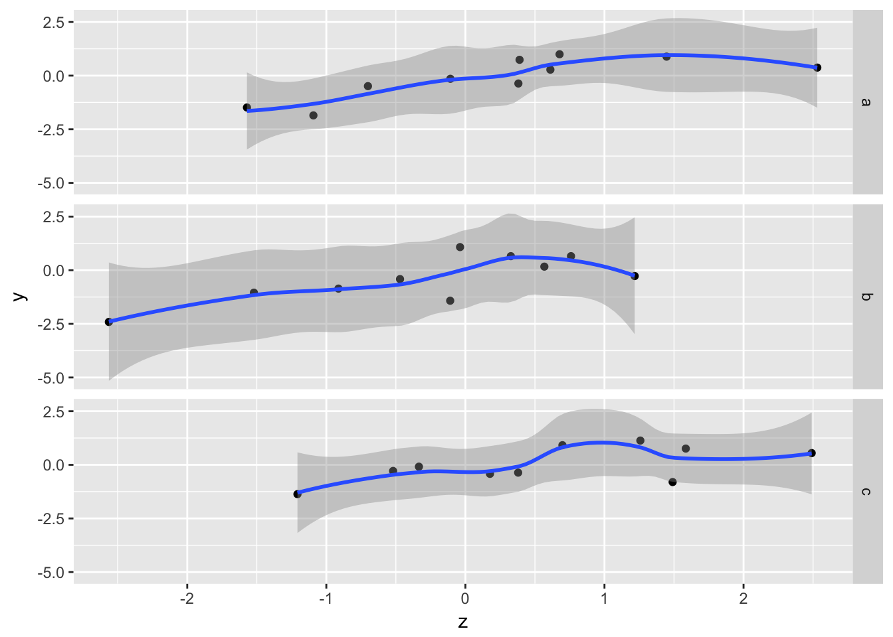 用geom_smooth()替xy散佈圖加上趨勢線，使用linear regresion
ggplot(df, aes(x = z, y = y)) +geom_point()+facet_grid(gp~.)+geom_smooth(method='lm')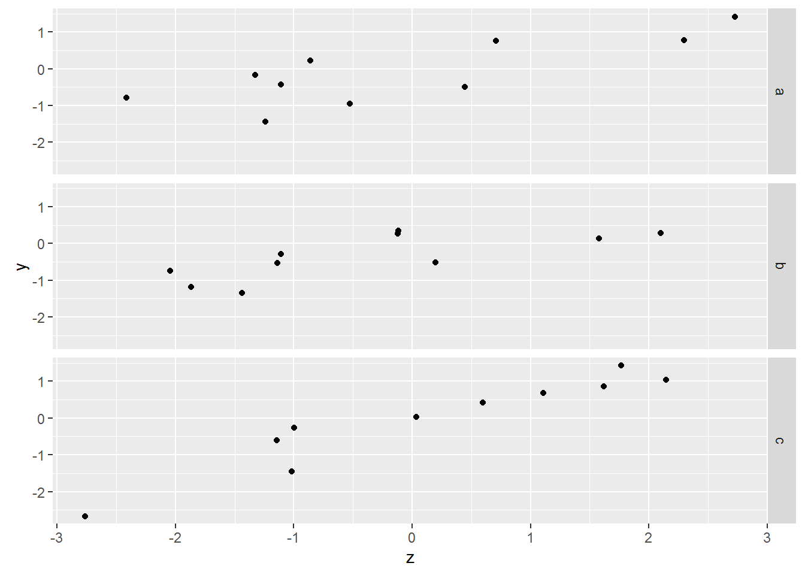 改用geom_line()畫線
ggplot(df, aes(x = z, y = y)) +geom_line()+facet_grid(gp~.)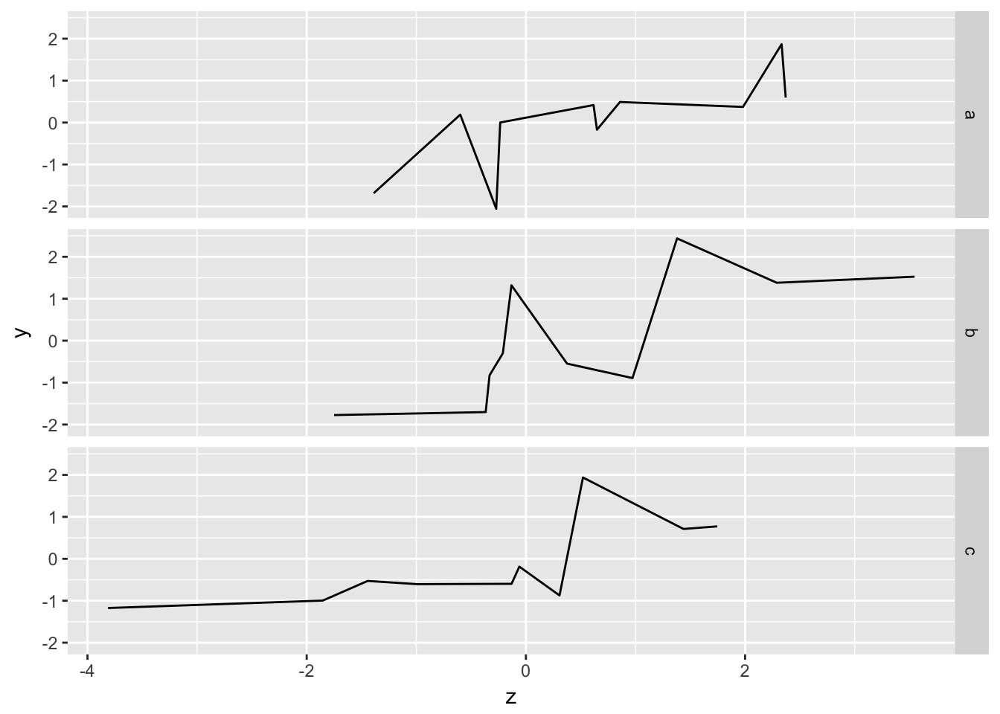 改用顏色分組，使用aes(color='group name')
ggplot(df, aes(x = z, y = y, color=gp)) +geom_line()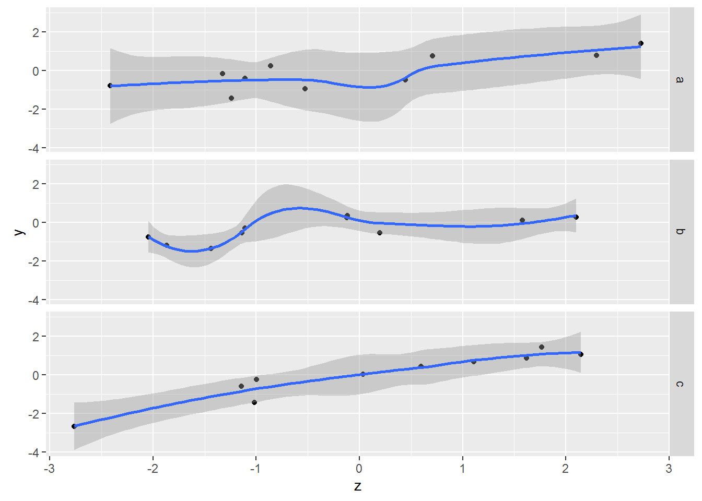
畫圖前需要注意的幾個小地方：
提供資料時，把資料修改為想要在圖片顯示的文字。從上面的範例可以發現，ggplot2會直接將資料分組（a/b/c）直接標在圖上，與其之後再來改圖，不如在資料處理時就將a/b/c改為有意義且可以直接使用的文字。 如果是離散性的資料，但卻又是數值時（像是1,2,3）可以用factor()轉換，ggplot會將factor視為離散資料
Building Plots with ggplot2 - When building plots in ggplot2 (rather than using qplot) the “artist’s palette” model may be the closest analogy - Plots are built up in layers - Plot the data - Overlay a summary - Metadata and annotation
Annotation
- Labels:
xlab(),ylab(),labs(),ggtitle() - Each of the “geom” functions has options to modify
- For things that only make sense globally, use
theme() - Example:
theme(legend.position = "none") - Two standard appearance themes are included
theme_gray(): The default theme (gray background)theme_bw(): More stark/plainggthemespackages Websitexkcdpackages Website
Axis Limits
testdat <- data.frame(x = 1:100, y = rnorm(100))
testdat[50,2] <- 100 ## Outlier!
plot(testdat$x, testdat$y, type = "l", ylim = c(-3,3))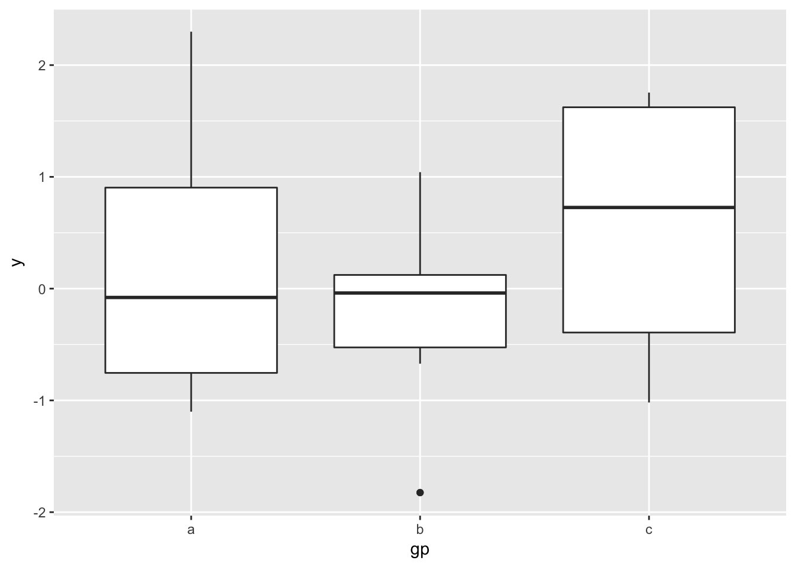
g <- ggplot(testdat, aes(x = x, y = y))
g + geom_line()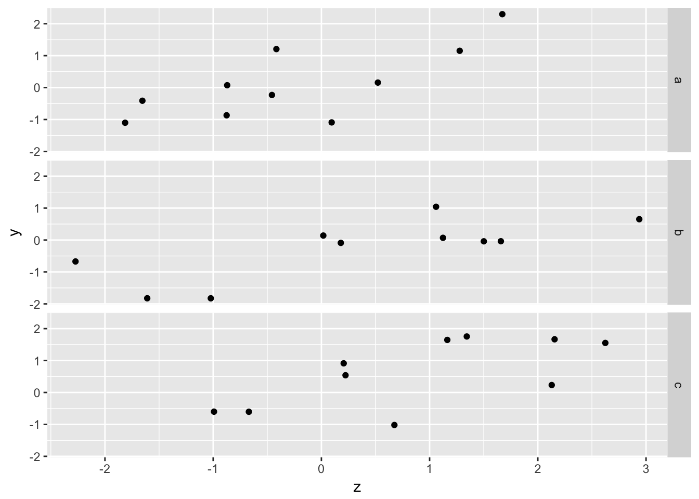
g + geom_line() + ylim(-3, 3)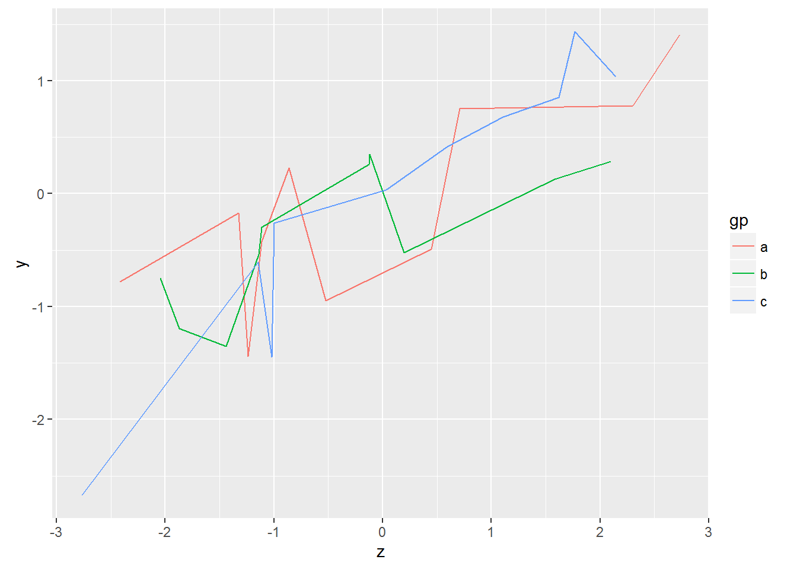
g + geom_line() + coord_cartesian(ylim = c(-3, 3))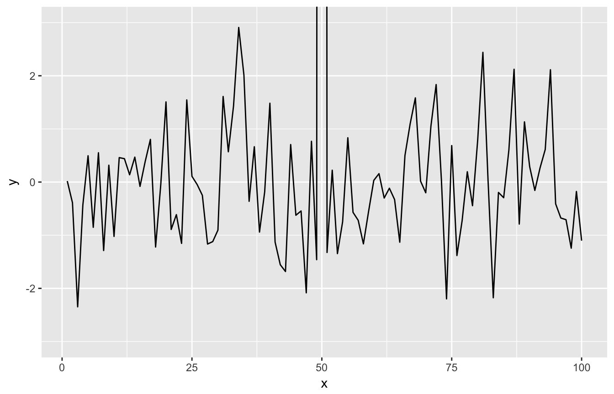
7.2 ggplot2+地圖
7.2.1 Choropleth map
- 面量圖
- 把統計資料用顏色畫在對應的地圖上
choroplethrpackage- 基於
ggplot2package所做的專門畫面量圖的工具
if (!require('choroplethr')){
install.packages("choroplethr")
library(choroplethr)
}美國各州人口分布 用到choroplethr package, 記得先讀入 choroplethrMaps
data(df_pop_state) #記載各州人口數的資料
state_choropleth(df_pop_state) #把各州人口畫在地圖上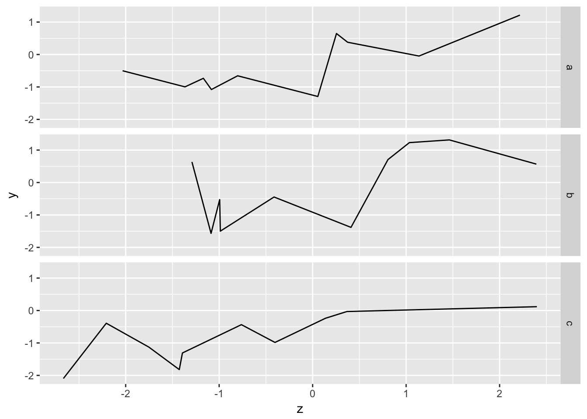
data(continental_us_states)
state_choropleth(df_pop_state,reference_map = TRUE,
zoom= continental_us_states) #把各州人口畫在地圖上
世界人口分布 用choroplethr package畫地圖，資料來自WDI package
if (!require('WDI')){
install.packages("WDI")
library(WDI)
}
choroplethr_wdi(code="SP.POP.TOTL", year=2014,
title="2016 Population", num_colors=1)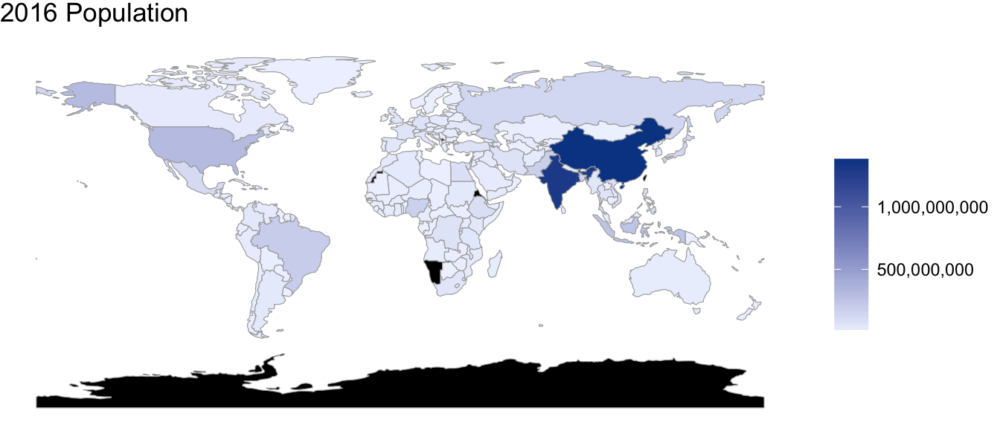
世界平均壽命分布
- 用
choroplethrpackage畫地圖，資料來自WDIpackage WDI: World Development Indicators有許多開放資料可參考
choroplethr_wdi(code="SP.DYN.LE00.IN", year=2014,
title="2014 Life Expectancy")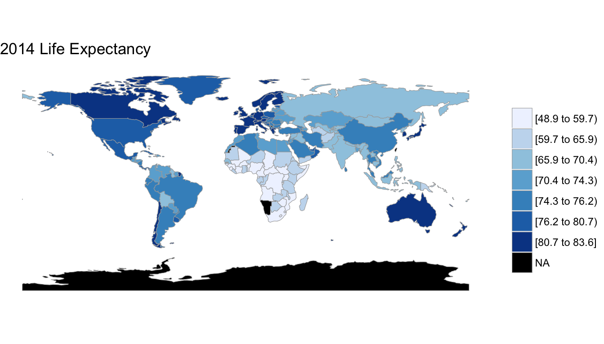
亞洲太平洋人口分布
- 用
choroplethrpackage畫地圖，資料來自WDIpackage WDI: World Development Indicators- zoom，只畫這些國家，名字要和country.regions資料完全吻合
choroplethr_wdi(code="SP.POP.TOTL", year=2014,
title="2014 Life Expectancy",
zoom=c('taiwan','japan','south korea','philippines'))
7.2.2 ggmap
install.packages(“ggmap”, type = “source”) 把google map載入
library(ggmap)
if (!require('ggmap')){
install.packages("ggmap")
library(ggmap)
}
twmap <- get_map(location = 'Taiwan', zoom = 7,language = "zh-TW")
#location:可以是地名，也可以是經緯度座標
#zoom:放大比例
#language:地圖語言ggmap(twmap) #基於ggplot2物件，可用相同方式處理
ggmap實際應用範例-1 台北市水質地圖，資料處理部分
library(jsonlite)
WaterData<-fromJSON("http://data.taipei/opendata/datalist/apiAccess?scope=resourceAquire&rid=190796c8-7c56-42e0-8068-39242b8ec927")
WaterDataFrame<-WaterData$result$results
WaterDataFrame$longitude<-as.numeric(WaterDataFrame$longitude)
WaterDataFrame$latitude<-as.numeric(WaterDataFrame$latitude)
WaterDataFrame$qua_cntu<-as.numeric(WaterDataFrame$qua_cntu)台北市水質地圖，畫圖部分
library(ggmap)
TaipeiMap = get_map(location = c(121.43,24.93,121.62,25.19),
zoom = 11, maptype = 'roadmap')
TaipeiMapO = ggmap(TaipeiMap)+
geom_point(data=subset(WaterDataFrame,qua_cntu>=0),
aes(x=longitude, y=latitude,color=qua_cntu,size=3.5))+
scale_color_continuous(low = "yellow",high = "red")+
guides(size=FALSE)台北市水質地圖，畫圖部分
TaipeiMapO7.3 Taiwan的面量圖
- 使用
rgdal,rgeos,maptoolspackage處理地圖檔 - 使用
ggplot2&RColorBrewer畫圖
7.3.1 Taiwan的面量圖
- 用台灣的Open Data來畫一次
- 還沒有好用的package可用
- 只好自己從頭來了
- 下載台灣的地圖資料 政府資料開放平台
- 鄉鎮市區界線(TWD97經緯度)
- 將下載的
資料夾解壓縮，放到專案資料夾內 - in
shapefileWiki - 空間資料開放格式
- 參考資料
將shapefile讀入R
使用maptools package 的readShapeSpatial function
if (!require('rgdal')){#for fortify()
install.packages("rgdal");library(rgdal)
}
if (!require('rgeos')){#for fortify()
install.packages("rgeos");library(rgeos)
}
if (!require('maptools')){#for readShapeSpatial()
install.packages("maptools");library(maptools)
}
tw_new <- readShapeSpatial("Taiwan/Town_MOI_1041215.shp") #檔名
names(tw_new)處理shapefile-1 - 需要rgdal, rgeos,maptools - fortify: 將shapefile物件轉為data.frame - 參考資料
library(ggplot2) #for fortify(), ggplot(), ggmap()
head(tw_new$Town_ID)
tw_new.df <- fortify(tw_new, region = "T_UID") #from ggplot2 packagehead(tw_new.df,10)做一個假資料來畫：著色基準檔
#做一個假資料來畫
#prevalence設為亂數rnorm(需要的亂數個數)
mydata<-data.frame(NAME_2=tw_new$T_Name, id=tw_new$T_UID,
prevalence=rnorm(length(tw_new$T_UID)))
head(mydata)中文編碼
#利用iconv將不知所以然的代碼（\xa6\xa8\xa5\\\xc2\xed）轉為看得懂的中文
#from big5 to utf-8
mydata$NAME_2<-iconv(as.character(mydata$NAME_2), #NAME_2原本是factor
from="big5", to = "UTF-8")
head(mydata,10)合併的圖檔與著色基準檔
#最後將有prevalence的假數據mydata和經緯度資料tw_new.df合併, 用merge()
final.plot<-merge(tw_new.df,mydata,by="id",all.x=T)
head(final.plot,10)畫台灣面量圖-1
library(RColorBrewer) #配色用brewer.pal( 9 , "Reds" )
twcmap<-ggplot() +
geom_polygon(data = final.plot,
aes(x = long, y = lat, group = group,
fill = prevalence),
color = "black", size = 0.25) +
coord_map()+#維持地圖比例
scale_fill_gradientn(colours = brewer.pal(9,"Reds"))+
theme_void()+
labs(title="Prevalence of X in Taiwan")畫台灣面量圖-2
twcmap使用google map ggmap package 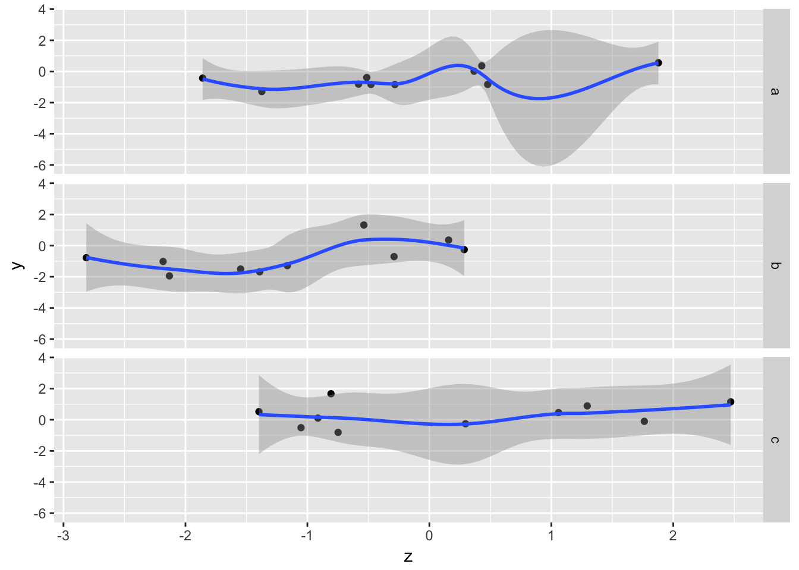
if (!require('ggmap')){
install.packages("ggmap")
library(ggmap)#for get_map()
}
twmap <- get_map(location = 'Taiwan', zoom = 7,language = "zh-TW")
#location:可以是地名，也可以是經緯度座標
#zoom:放大比例 2-20
#language:地圖語言ggmap(twmap) #基於ggplot2物件，可用相同方式處理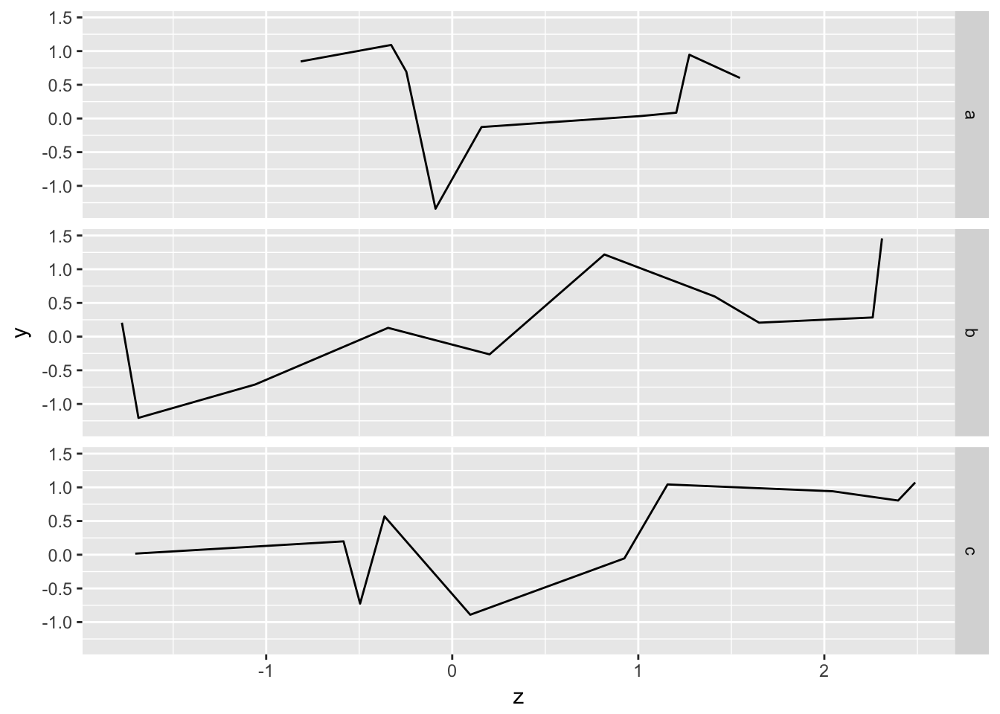
ggmap，maptype
#maptype:地圖型態，"terrain", "terrain-background", "satellite",
# "roadmap","hybrid" (google maps), "terrain", "watercolor",
# "toner" (stamen maps),
# or a positive integer for cloudmade maps (see ?get_cloudmademap)
TaipeiMap = get_map(location = c(121.43,24.93,121.62,25.19),
zoom = 14, maptype = 'roadmap')
ggmap(TaipeiMap,extent = 'device') #extent = 'device' 滿版ggmap+面量圖
ggmap(twmap)+ #ggmap
geom_polygon(data = final.plot, #面量圖
aes(x = long, y = lat, group = group, fill = prevalence),
color = "grey80", size = 0.1,alpha = 0.5) +
scale_fill_gradientn(colours = brewer.pal(9,"Reds"))Density Map? 美國人口密度圖 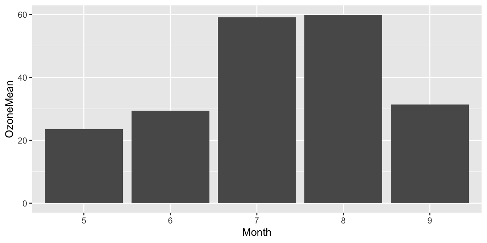
使用 ggplot2 + ggmap 來畫人口密度圖 - 資料前處理1
#取得美國各州中心座標資料
StateCenter<-data.frame(
region=tolower(state.name),lon=state.center$x,lat=state.center$y)
head(StateCenter,1)## region lon lat
## 1 alabama -86.75 32.59#美國各州人口資料
StatePop<-merge(df_pop_state,StateCenter,by="region")
head(StatePop,1)## region value lon lat
## 1 alabama 4777326 -86.75 32.59使用 ggplot2 + ggmap 來畫人口密度圖 - 資料前處理2
#將人口數值，轉為點！重要！
PopPoint<-NULL
for(i in 1:nrow(StatePop)){
#每100萬人轉為1點
for(j in 1:(StatePop[i,"value"]/1000000)){
PopPoint<-rbind(PopPoint,StatePop[i,])
}
}
head(PopPoint,3)## region value lon lat
## 1 alabama 4777326 -86.75 32.59
## 2 alabama 4777326 -86.75 32.59
## 3 alabama 4777326 -86.75 32.59使用 ggplot2 + ggmap 來畫人口密度圖 - 作圖
USMap <- get_map(location = "United States", zoom = 4)
densityMap<-ggmap(USMap, extent = "device") +
geom_density2d(data = PopPoint, aes(x = lon, y = lat), size = 0.3) +
stat_density2d(data = PopPoint,
aes(x = lon, y = lat, fill = ..level.., alpha = ..level..),
size = 0.01, bins = 16, geom = "polygon") +
scale_fill_gradient(low = "green", high = "red", guide = FALSE) +
scale_alpha(range = c(0, 0.3), guide = FALSE)美國人口密度圖 Density Map
densityMap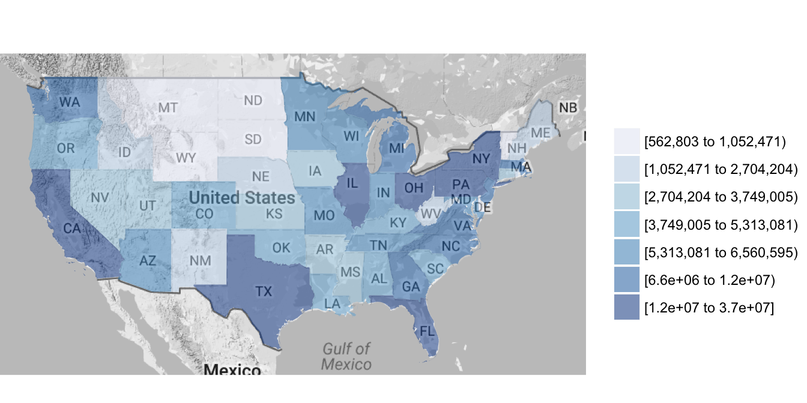
ggmap參考資料 - ggmap package source code - ggmap cheat sheet - ggmap doc
7.3.2 Heatmap 先將資料讀入
#讀.csv檔案
nba <- read.csv("http://datasets.flowingdata.com/ppg2008.csv")
head(nba)## Name G MIN PTS FGM FGA FGP FTM FTA FTP X3PM X3PA X3PP ORB
## 1 Dwyane Wade 79 38.6 30.2 10.8 22.0 0.491 7.5 9.8 0.765 1.1 3.5 0.317 1.1
## 2 LeBron James 81 37.7 28.4 9.7 19.9 0.489 7.3 9.4 0.780 1.6 4.7 0.344 1.3
## 3 Kobe Bryant 82 36.2 26.8 9.8 20.9 0.467 5.9 6.9 0.856 1.4 4.1 0.351 1.1
## 4 Dirk Nowitzki 81 37.7 25.9 9.6 20.0 0.479 6.0 6.7 0.890 0.8 2.1 0.359 1.1
## 5 Danny Granger 67 36.2 25.8 8.5 19.1 0.447 6.0 6.9 0.878 2.7 6.7 0.404 0.7
## 6 Kevin Durant 74 39.0 25.3 8.9 18.8 0.476 6.1 7.1 0.863 1.3 3.1 0.422 1.0
## DRB TRB AST STL BLK TO PF
## 1 3.9 5.0 7.5 2.2 1.3 3.4 2.3
## 2 6.3 7.6 7.2 1.7 1.1 3.0 1.7
## 3 4.1 5.2 4.9 1.5 0.5 2.6 2.3
## 4 7.3 8.4 2.4 0.8 0.8 1.9 2.2
## 5 4.4 5.1 2.7 1.0 1.4 2.5 3.1
## 6 5.5 6.5 2.8 1.3 0.7 3.0 1.8Heatmap 資料處理，寬表轉長表
library(reshape2) #for melt()
nba.m <- melt(nba,id.vars = "Name") #寬表轉長表,以名字作依據
head(nba.m,10)## Name variable value
## 1 Dwyane Wade G 79
## 2 LeBron James G 81
## 3 Kobe Bryant G 82
## 4 Dirk Nowitzki G 81
## 5 Danny Granger G 67
## 6 Kevin Durant G 74
## 7 Kevin Martin G 51
## 8 Al Jefferson G 50
## 9 Chris Paul G 78
## 10 Carmelo Anthony G 66Heatmap geom_tile()
library(ggplot2) #for ggplot()
ggplot(nba.m, aes(variable, Name)) + #aes(x,y)
geom_tile(aes(fill = value),colour = "white")+ #geom_tile: 區塊著色
scale_fill_gradient(low = "white",high = "steelblue") #數值低：白色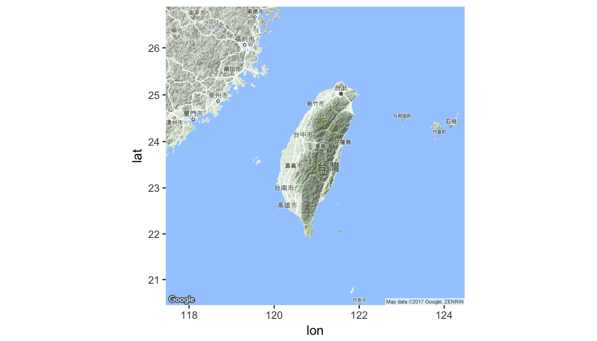
Heatmap 資料前處理：scale
head(nba,2)## Name G MIN PTS FGM FGA FGP FTM FTA FTP X3PM X3PA X3PP ORB
## 1 Dwyane Wade 79 38.6 30.2 10.8 22.0 0.491 7.5 9.8 0.765 1.1 3.5 0.317 1.1
## 2 LeBron James 81 37.7 28.4 9.7 19.9 0.489 7.3 9.4 0.780 1.6 4.7 0.344 1.3
## DRB TRB AST STL BLK TO PF
## 1 3.9 5.0 7.5 2.2 1.3 3.4 2.3
## 2 6.3 7.6 7.2 1.7 1.1 3.0 1.7nba[,2:21]<-apply(nba[,2:21], 2, scale) #scale處理，將數值轉為平均=0
head(nba,2)## Name G MIN PTS FGM FGA FGP FTM FTA FTP
## 1 Dwyane Wade 0.6179 1.0020 3.180 2.920 2.597 0.5136 1.917 2.111 -0.7402
## 2 LeBron James 0.7694 0.6119 2.567 1.957 1.697 0.4649 1.779 1.897 -0.5233
## X3PM X3PA X3PP ORB DRB TRB AST STL BLK TO
## 1 -0.108 0.1304 -0.15749 -0.27214 -0.3466 -0.3287 1.652 2.558 1.2065 1.79
## 2 0.492 0.6972 0.02739 -0.06118 1.0081 0.6605 1.516 1.367 0.8627 1.06
## PF
## 1 -0.2985
## 2 -1.3904apply() 還記得嗎…. 有類似for迴圈的功能
- apply(Data, MARGIN, FUN,…)
- Data：矩陣（Matrix），Data Frame
- MARGIN：1=row, 2=column
- FUN：函數
- …：函數要用的參數
#針對nba的各column做scale處理-->將數值轉為平均=0
apply(nba[,2:21], 2, scale)## G MIN PTS FGM FGA FGP FTM FTA
## [1,] 0.61793 1.001970 3.17994 2.92002 2.59683 0.51360 1.91748 2.11077
## [2,] 0.76938 0.611930 2.56697 1.95719 1.69724 0.46492 1.77873 1.89659
## [3,] 0.84511 -0.038137 2.02211 2.04472 2.12562 -0.07059 0.80750 0.55795
## [4,] 0.76938 0.611930 1.71563 1.86965 1.74007 0.22151 0.87688 0.45085
## [5,] -0.29079 -0.038137 1.68158 0.90682 1.35453 -0.55742 0.87688 0.55795
## [6,] 0.23930 1.175321 1.51131 1.25694 1.22602 0.14848 0.94625 0.66504
## [7,] -1.50242 0.828619 1.27293 -0.66873 -0.01628 -1.21463 2.95807 2.37850
## [8,] -1.57814 0.135214 0.76212 1.95719 1.52589 0.65965 -0.71871 -0.45942
## [9,] 0.54220 0.958632 0.65996 0.55669 0.06940 0.80570 0.73813 0.45085
## [10,] -0.36652 -0.774880 0.65996 0.55669 1.01183 -0.65478 0.59938 0.66504
## [11,] 0.46648 0.785281 0.62591 0.46916 0.19791 0.41624 1.22374 1.14695
## [12,] 0.54220 0.395241 0.59185 0.55669 0.41210 0.24585 0.39126 0.34376
## [13,] 0.76938 0.828619 0.45564 0.73176 0.79764 -0.04625 -0.37184 -0.13815
## [14,] 0.08784 -0.948231 0.38753 1.25694 0.66913 0.87872 -0.57996 -0.45942
## [15,] -1.35096 0.221890 0.18321 0.11904 -0.78736 1.68198 0.94625 0.77213
## [16,] 0.61793 1.392011 0.18321 0.29410 0.88332 -0.80083 -0.64933 -0.67361
## [17,] -0.13934 -0.081475 0.14916 -0.75626 -0.35898 -0.77649 1.70936 1.57531
## [18,] -2.86550 0.048538 0.11510 0.03151 0.28359 -0.36269 -0.51059 -0.51297
## [19,] 0.39075 1.305335 0.04699 0.46916 0.45494 0.05112 0.04440 -0.19169
## [20,] -1.57814 -0.514853 -0.02111 0.73176 0.66913 0.12414 -0.78808 -0.51297
## [21,] -0.29079 1.001970 -0.02111 -0.14355 0.11224 -0.41137 0.25252 0.07603
## [22,] 0.69366 0.221890 -0.02111 -0.05602 0.36926 -0.80083 -0.37184 -0.40588
## [23,] -0.89660 1.478686 -0.05517 -0.40614 0.41210 -1.36068 0.18315 0.07603
## [24,] 0.84511 0.135214 -0.05517 -0.14355 0.02656 -0.36269 -0.51059 -0.62006
## [25,] 0.61793 -0.254826 -0.08922 -0.31861 -1.51560 2.48525 1.15437 2.59268
## [26,] 0.76938 0.481916 -0.12327 -0.66873 -0.57317 -0.31400 0.66876 0.50440
## [27,] 0.16357 -0.601529 -0.25949 -0.14355 0.28359 -0.75215 -1.06557 -0.99488
## [28,] -0.44224 0.785281 -0.39570 -0.93133 -0.10195 -1.45804 -0.09435 -0.29879
## [29,] 0.46648 -1.164920 -0.39570 -0.05602 -1.08723 1.90106 0.11377 -0.08460
## [30,] 0.84511 -0.168151 -0.42976 -0.84380 -0.44466 -0.75215 0.25252 0.23667
## [31,] 0.23930 -1.164920 -0.42976 -0.14355 -0.05912 -0.16796 -1.41244 -1.53034
## [32,] -0.21506 0.265227 -0.49787 -0.58120 -0.61601 0.02678 0.04440 -0.13815
## [33,] 0.31502 -1.121583 -0.53192 -0.05602 -0.48750 0.83004 -0.16372 0.29022
## [34,] -3.47131 -0.298164 -0.63408 0.29410 0.54061 -0.46005 -1.13495 -1.10197
## [35,] 0.61793 0.438579 -0.66814 -0.23108 0.02656 -0.41137 -0.99620 -0.78070
## [36,] 0.76938 0.351903 -0.66814 -0.14355 -1.30141 2.36354 -0.37184 -0.24524
## [37,] 0.84511 1.522024 -0.70219 -0.75626 -0.83020 0.07546 -0.09435 0.29022
## [38,] -1.50242 -2.248366 -0.77030 -1.54404 -1.51560 -0.21664 1.36249 1.20049
## [39,] 0.84511 0.741943 -0.80435 -0.49367 -0.14479 -0.77649 -1.20432 -1.31615
## [40,] 0.61793 0.525254 -0.87246 -0.84380 -0.91587 0.05112 -0.78808 -0.78070
## [41,] -0.29079 -0.991569 -0.87246 -0.40614 -0.14479 -0.55742 -0.99620 -1.04843
## [42,] 0.61793 0.005201 -0.90651 -1.01886 -1.17290 0.24585 -1.20432 -1.42325
## [43,] 0.76938 0.351903 -0.94057 -0.05602 -0.27331 0.34321 -1.06557 -0.94133
## [44,] -1.42669 -1.901663 -0.97462 -0.58120 -0.35898 -0.46005 -0.99620 -0.88779
## [45,] 0.76938 -0.558191 -1.04273 -0.84380 -0.87304 -0.07059 -1.48181 -1.63743
## [46,] 0.31502 -2.681744 -1.04273 -0.58120 -2.02966 3.38588 -0.44121 0.55795
## [47,] 0.61793 -0.038137 -1.07678 -1.19392 -0.91587 -0.75215 -1.34307 -1.31615
## [48,] 0.61793 -0.428178 -1.07678 -1.98169 -1.51560 -1.26331 0.39126 -0.03106
## [49,] -1.04806 0.178552 -1.14489 -1.19392 -0.57317 -1.28766 0.04440 0.12958
## [50,] 0.23930 -2.768420 -1.24705 -1.19392 -0.87304 -0.80083 -0.92683 -0.99488
## FTP X3PM X3PA X3PP ORB DRB TRB AST
## [1,] -0.74017 -0.108 0.13036 -0.15749 -0.27214 -0.34657 -0.3287 1.65225
## [2,] -0.52332 0.492 0.69717 0.02739 -0.06118 1.00809 0.6605 1.51615
## [3,] 0.57536 0.252 0.41377 0.07532 -0.27214 -0.23368 -0.2526 0.47272
## [4,] 1.06688 -0.468 -0.53091 0.13010 -0.27214 1.57254 0.9649 -0.66144
## [5,] 0.89341 1.812 1.64184 0.43824 -0.69405 -0.06435 -0.2907 -0.52534
## [6,] 0.67656 0.132 -0.05857 0.56149 -0.37761 0.55654 0.2420 -0.47998
## [7,] 0.73438 1.332 1.02780 0.51356 -0.79953 -0.85457 -0.8614 -0.52534
## [8,] -1.13049 -1.428 -1.47558 -2.32813 2.15388 1.68542 1.9542 -1.02437
## [9,] 0.74884 -0.468 -0.43644 0.16434 -0.48309 0.10499 -0.1385 3.24007
## [10,] -0.33539 -0.228 -0.29474 0.21227 0.25526 0.38721 0.3561 -0.20778
## [11,] 0.01157 -1.188 -1.23941 -0.65051 1.52101 1.51609 1.5737 -0.61608
## [12,] 0.11276 -0.108 -0.20027 0.25336 -0.06118 -0.62879 -0.4429 0.56345
## [13,] -0.89919 0.252 0.31930 0.07532 1.09909 1.12098 1.1552 -0.88828
## [14,] -0.49441 -1.068 -1.09771 -0.32868 -1.01049 -1.02390 -1.0517 1.38005
## [15,] 0.27178 -1.308 -1.47558 0.60942 0.88813 0.78232 0.8508 -0.84291
## [16,] 0.14167 0.852 0.93334 0.13695 -0.58857 -0.51590 -0.5570 0.88102
## [17,] 0.05493 -0.348 -0.01134 -0.33552 -1.01049 -0.91101 -0.9756 1.38005
## [18,] -0.03180 1.092 1.21674 0.17803 -0.69405 -1.13679 -1.0136 -0.52534
## [19,] 0.98014 -1.308 -1.38111 -0.68474 0.78265 1.06454 1.0030 -0.70681
## [20,] -1.18832 -0.708 -0.62537 -0.06847 1.83744 1.34676 1.6118 -0.79754
## [21,] 0.60428 -0.228 -0.05857 -0.20542 0.46622 -0.06435 0.1278 0.20052
## [22,] 0.01157 0.852 0.79164 0.30813 -0.48309 -0.17723 -0.2907 0.38199
## [23,] 0.14167 0.612 0.93334 -0.01369 -0.16666 -0.34657 -0.2907 1.19858
## [24,] 0.69102 1.092 0.88610 0.47932 -0.79953 -0.96745 -0.8995 -0.20778
## [25,] -3.21221 -1.428 -1.52281 -2.32813 3.10319 2.87075 3.0196 -1.11511
## [26,] 0.19950 0.372 0.27207 0.34922 -0.69405 0.27432 -0.1005 -0.11705
## [27,] -0.33539 1.332 1.50014 0.16434 0.04430 0.21787 0.1278 -1.11511
## [28,] 0.80667 1.212 1.35844 0.13695 -1.01049 -1.08034 -1.0897 0.24589
## [29,] 0.71993 -1.428 -1.52281 4.51931 1.31005 1.51609 1.5357 -0.93364
## [30,] -0.16191 0.252 0.17760 0.39030 -0.69405 -0.34657 -0.4809 -0.66144
## [31,] 0.92232 1.332 1.40567 0.17803 -0.90501 -1.47545 -1.3180 -0.20778
## [32,] 0.47417 -0.228 0.03590 -0.20542 -1.01049 -1.13679 -1.1278 3.10397
## [33,] -1.79548 -1.428 -1.52281 -2.32813 1.41553 1.96765 1.8401 -0.16241
## [34,] 0.19950 -1.068 -1.05048 -0.21912 -0.79953 -0.40301 -0.5951 -0.07168
## [35,] -0.71125 -0.108 -0.05857 0.07532 0.04430 -0.17723 -0.1385 -0.97901
## [36,] -0.50887 -1.428 -1.52281 1.09559 1.94292 1.06454 1.4215 -0.16241
## [37,] -1.33288 -0.228 -0.01134 -0.22597 -0.27214 0.04854 -0.0624 0.65418
## [38,] 0.11276 -0.828 -0.62537 -0.59573 -0.37761 0.04854 -0.1385 -0.93364
## [39,] 0.90786 0.732 0.64993 0.30129 -0.69405 -0.79812 -0.7853 -0.29851
## [40,] 0.19950 0.492 0.27207 0.52725 -0.69405 -0.57234 -0.6331 -0.29851
## [41,] 0.45971 -0.228 -0.20027 0.19173 -0.69405 -1.19323 -1.0517 0.24589
## [42,] 1.96318 1.572 1.40567 0.47247 -0.58857 -1.02390 -0.8995 -0.47998
## [43,] -0.50887 -1.308 -1.38111 -0.61627 1.62648 0.04854 0.6225 -0.88828
## [44,] -0.49441 -0.108 -0.01134 0.03424 -0.27214 -0.34657 -0.2907 -1.02437
## [45,] 1.38492 1.332 0.93334 0.65735 -0.79953 -0.91101 -0.9375 0.10979
## [46,] -3.19775 -1.428 -1.52281 -2.32813 1.20457 0.78232 0.9649 -0.97901
## [47,] 0.28624 1.932 1.78354 0.39030 -0.16666 0.04854 -0.0624 -0.57071
## [48,] 1.39938 1.092 0.83887 0.46563 -1.01049 -1.08034 -1.0897 1.15322
## [49,] -0.50887 -0.828 -0.71984 -0.39030 -0.90501 -1.13679 -1.0897 0.51809
## [50,] 0.35852 0.612 0.93334 -0.10271 -0.06118 -1.08034 -0.7473 0.10979
## STL BLK TO PF
## [1,] 2.55824 1.206465 1.79045 -0.29846
## [2,] 1.36725 0.862742 1.05965 -1.39037
## [3,] 0.89086 -0.168424 0.32886 -0.29846
## [4,] -0.77652 0.347159 -0.95003 -0.48044
## [5,] -0.30013 1.378326 0.14616 1.15743
## [6,] 0.41446 0.175298 1.05965 -1.20839
## [7,] 0.17627 -0.684007 0.87695 -0.29846
## [8,] -0.77652 1.893909 -1.13273 0.61147
## [9,] 3.98742 -0.855868 1.05965 0.42949
## [10,] -0.06193 -0.340285 1.05965 0.97544
## [11,] -0.53833 0.690881 -0.21924 0.06551
## [12,] -0.06193 -0.512146 -0.95003 -1.57236
## [13,] 0.17627 -0.512146 -1.68083 0.42949
## [14,] -0.53833 -0.855868 0.32886 -1.75434
## [15,] -0.53833 0.862742 0.69425 1.15743
## [16,] -0.06193 -0.684007 0.14616 -0.48044
## [17,] 1.36725 -0.684007 1.24235 -0.11647
## [18,] -0.06193 -0.855868 -1.49813 -1.93633
## [19,] -1.25292 0.519020 -0.58464 0.42949
## [20,] -0.53833 -0.512146 -0.21924 0.42949
## [21,] 1.12905 -0.512146 1.24235 0.06551
## [22,] -0.30013 -0.168424 -0.58464 0.79346
## [23,] 0.89086 -0.168424 2.70394 0.24750
## [24,] -0.53833 -0.512146 -0.03654 -0.48044
## [25,] -0.30013 3.956241 1.05965 1.70339
## [26,] -0.30013 -0.512146 0.69425 0.42949
## [27,] 0.17627 -0.512146 -0.40194 1.15743
## [28,] -0.53833 -0.684007 -0.21924 -1.93633
## [29,] -1.72931 2.237631 1.05965 1.52140
## [30,] -0.77652 -0.684007 -0.76733 1.15743
## [31,] 0.41446 -0.512146 -1.49813 -1.02640
## [32,] -0.06193 -0.512146 1.79045 -0.84441
## [33,] -1.49111 1.893909 -0.40194 -0.29846
## [34,] 1.12905 -0.512146 0.51156 0.42949
## [35,] 0.17627 0.175298 0.32886 0.61147
## [36,] -1.25292 0.690881 -0.95003 -0.66243
## [37,] 1.12905 -0.340285 0.51156 -1.02640
## [38,] -0.53833 -0.684007 -0.03654 2.43133
## [39,] -0.06193 -0.684007 0.69425 0.06551
## [40,] -0.06193 -0.512146 -0.58464 -0.29846
## [41,] -1.25292 -0.855868 -0.76733 0.24750
## [42,] -0.53833 -0.684007 -1.31543 -0.84441
## [43,] -0.30013 0.690881 -1.68083 0.24750
## [44,] -0.06193 0.003437 -1.31543 0.24750
## [45,] -0.53833 -0.855868 -0.40194 0.42949
## [46,] -1.01472 1.378326 -0.40194 1.70339
## [47,] -0.30013 0.003437 -0.76733 0.06551
## [48,] 0.17627 -0.684007 -0.40194 -0.84441
## [49,] 0.89086 -0.855868 0.32886 -1.75434
## [50,] 0.41446 -0.855868 -0.95003 0.61147Heatmap 資料前處理：scale
nba.m <- melt(nba)
ggplot(nba.m, aes(variable, Name)) + #aes(x,y)
geom_tile(aes(fill = value),colour = "white")+ #geom_tile: 區塊著色
scale_fill_gradient(low = "white",high = "steelblue") #數值低：白色
7.3.3 Treemap
需要treemapify packages 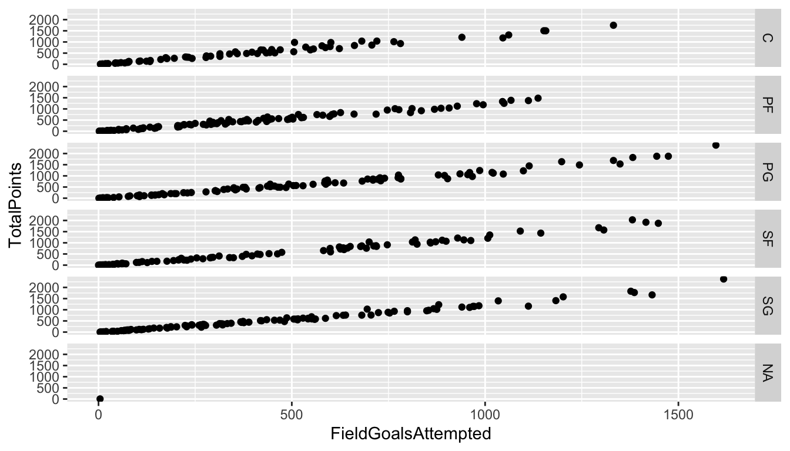
Treemap -資料處理 - 需要treemapify packages - 參考資料 - G20 Dataset
if (!require('treemapify')){
library(devtools) #install.packages("devtools") 沒安裝過記得先裝
install_github("wilkox/treemapify") #從GitHub安裝測試版Packages,需要安裝devtools
library(treemapify)
}
data(G20)#範例資料
head(G20)## Region Country Trade.mil.USD Nom.GDP.mil.USD HDI Population
## 1 Africa South Africa 208000 384315 0.629 53000000
## 2 North America United States 3969000 15684750 0.937 316173000
## 3 North America Canada 962600 1819081 0.911 34088000
## 4 North America Mexico 756800 1177116 0.775 112211789
## 5 South America Brazil 494800 2395968 0.730 201032714
## 6 South America Argentina 152690 474954 0.811 40117096
## Economic.classification
## 1 Developing
## 2 Advanced
## 3 Advanced
## 4 Developing
## 5 Developing
## 6 DevelopingTreemap -設定Treemap參數
## fill label xmin xmax ymin ymax group
## 1 0.876 European Union 0.00 38.67 0.00 59.00 Europe
## 2 0.920 Germany 38.67 63.32 0.00 19.17 Europe
## 3 0.893 France 38.67 63.32 19.17 33.88 Europe
## 4 0.875 United Kingdom 38.67 63.32 33.88 47.64 Europe
## 5 0.881 Italy 38.67 63.32 47.64 59.00 Europe
## 6 0.937 United States 0.00 53.16 59.00 100.00 North AmericaTreemap -作圖1 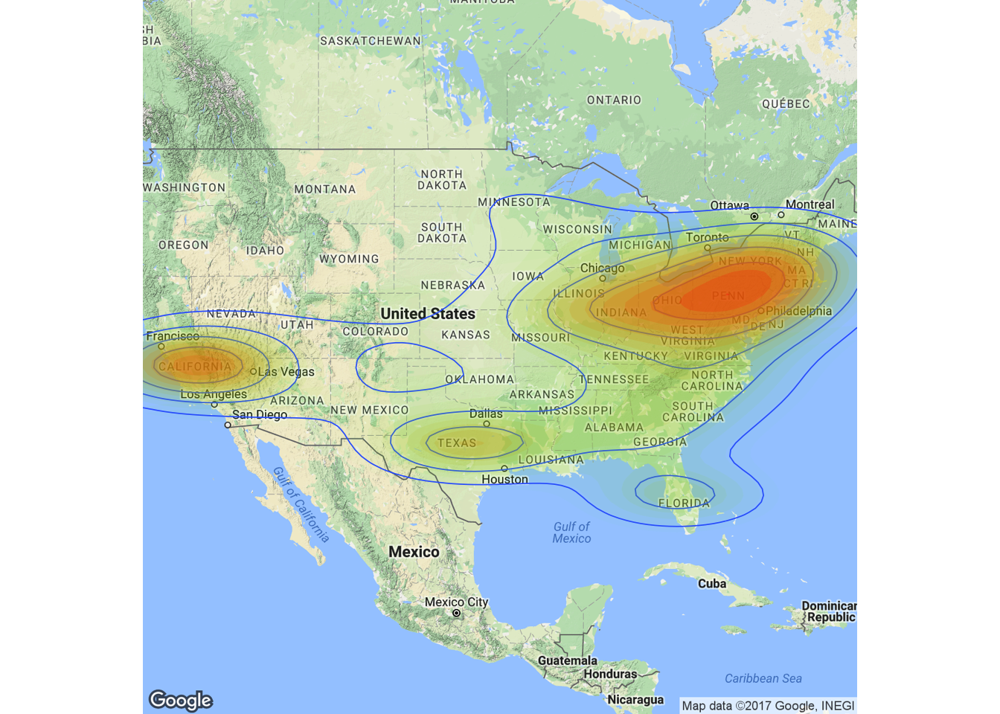
Treemap -作圖2 好像數字越大顏色越深比較合理？ 
7.3.4 Error bar 誤差線
- 終於要扯一點所謂的統計
- 通常使用在bar chart, line chart
- 比較多組資料的平均值高低時，務必加上Error bar 誤差線
- 誤差線計算
- Standard deviation (SD) 標準差：呈現資料本質時使用
- Standard error (SE) 標準誤差：呈現預估平均值的可能誤差時使用
- Confidence interval (CI) 信賴區間：呈現預估平均值的信心時使用
Bar Chart without Error Bar in ggplot2
library(datasets)
airquality$Month<-as.factor(airquality$Month) #將Month轉為因子變項
airquality.mean<-aggregate(Ozone~Month,airquality,mean) #計算每月Ozone平均mean
ggplot()+geom_bar(data=airquality.mean,aes(x=Month,y=Ozone),
stat = "identity") #stat = "identity" 直接畫數字
Bar Chart with Error Bar in ggplot2
airquality.sd<-aggregate(Ozone~Month,airquality,sd) #計算每月Ozone標準差sd
airquality.eb<-merge(airquality.mean,airquality.sd,by="Month")
ggplot(data=airquality.eb)+ #資料airquality.eb
geom_bar(aes(x=Month,y=Ozone.x),stat = "identity")+
geom_errorbar( #ymin低點, ymax高點, Ozone.x=mean, Ozone.y=sd標準差
aes(x=Month,ymin=Ozone.x-Ozone.y,ymax=Ozone.x+Ozone.y), width=.1)
7.3.5 參考文件與資源
- 官方網站文件
- RStudio製作的ggplot cheat sheet
- DataCamp互動式課程1 Data Visualization with ggplot2 (Part 1)
- DataCamp互動式課程2 Data Visualization with ggplot2 (Part 2)
- DataCamp互動式課程3 Data Visualization with ggplot2 (Part 3)
7.4 Case study
References
Wickham, Hadley, and Winston Chang. 2016. Ggplot2: Create Elegant Data Visualisations Using the Grammar of Graphics. https://CRAN.R-project.org/package=ggplot2.